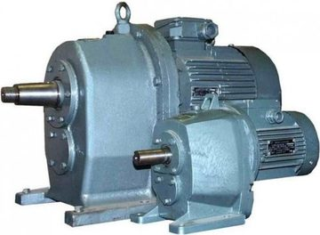
Цилиндрические соосные редукторы
Редуктор 4МЦ2С125 цилиндрический мотор-редуктор
Псковский Завод Механических Приводов

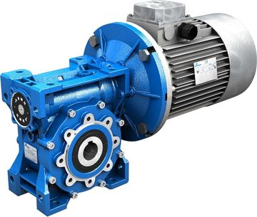
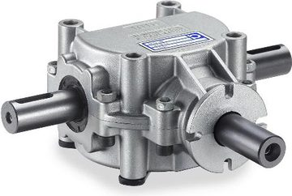
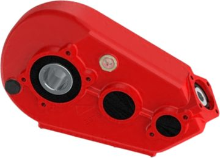

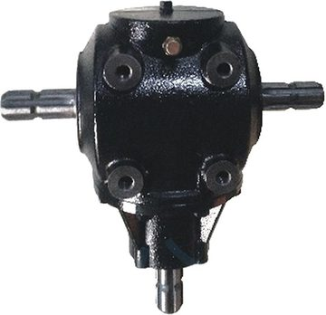
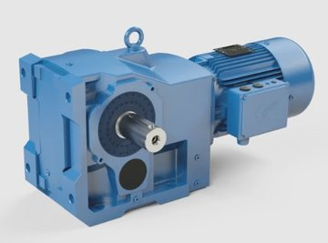
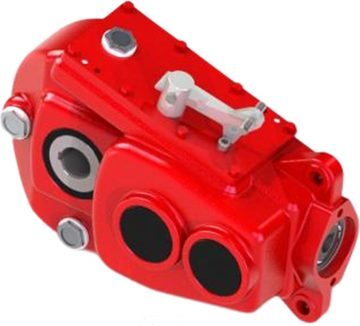
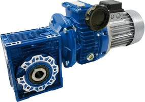
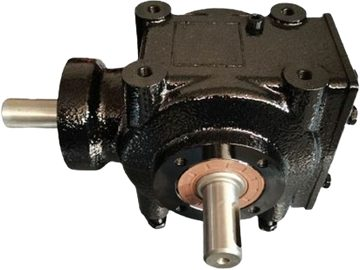
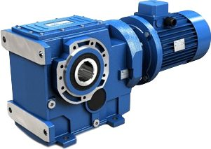
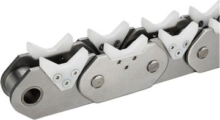
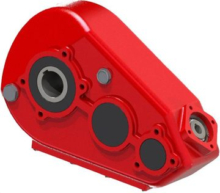
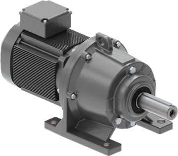
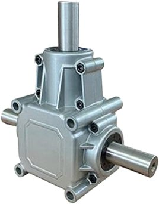
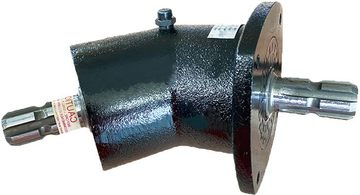
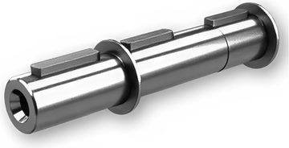
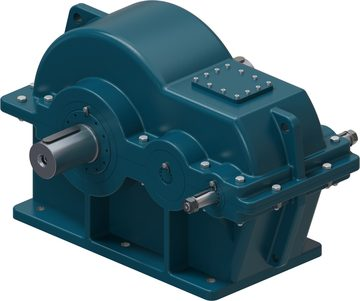
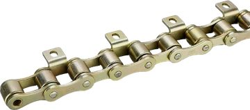
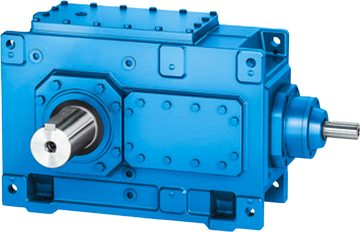
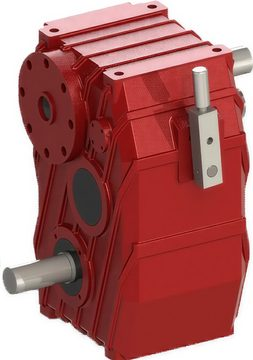
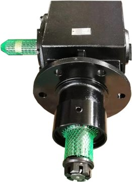
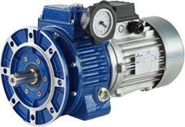

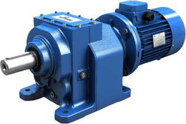
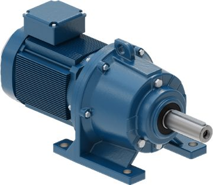
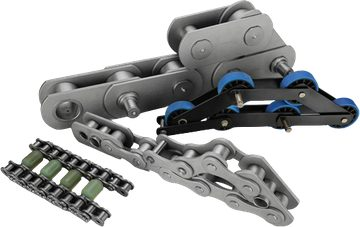
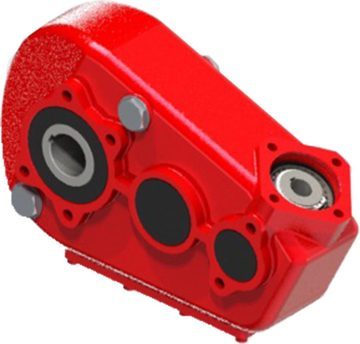
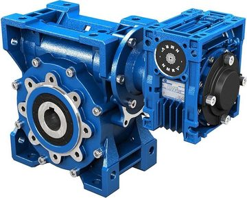
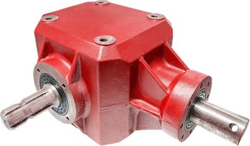
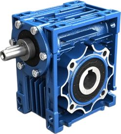
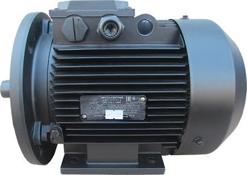
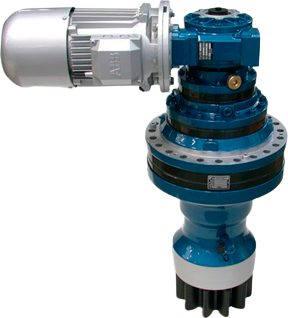
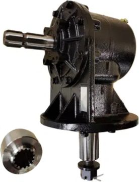
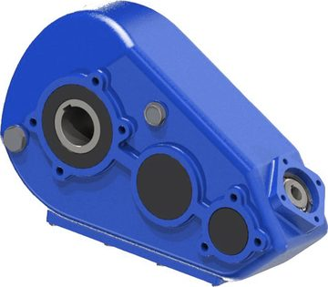
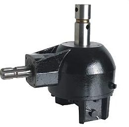
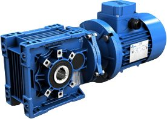
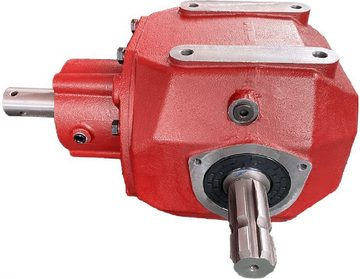
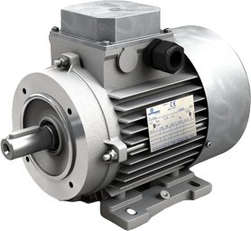
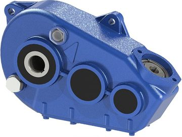
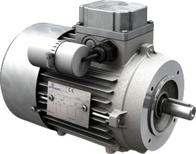
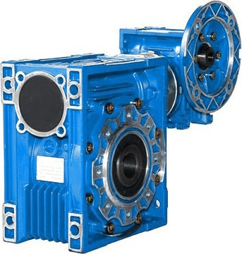
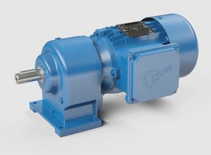
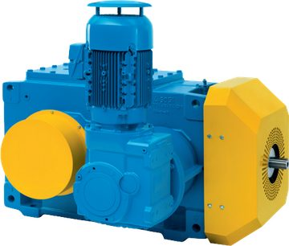
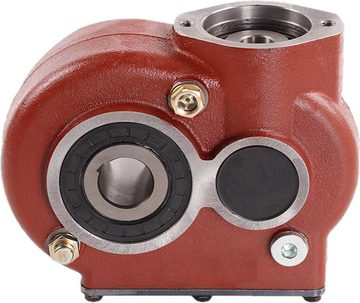
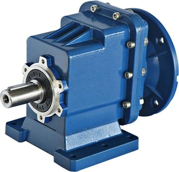

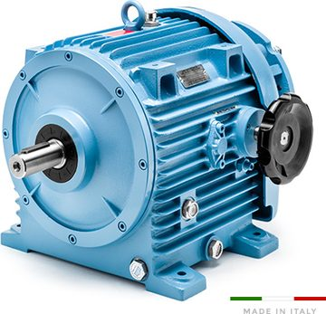
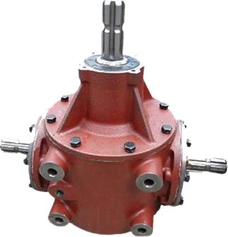
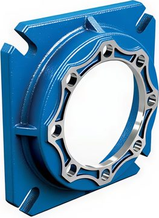
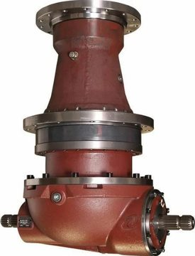
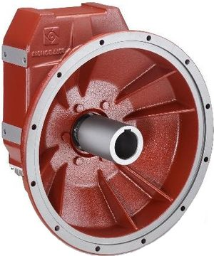
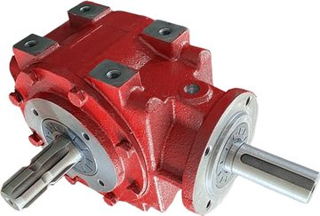


Сбросьте фильтры или напишите нам — подберём аналог под задачу.
Инженер перезвонит в рабочее время и подберёт привод под задачу.